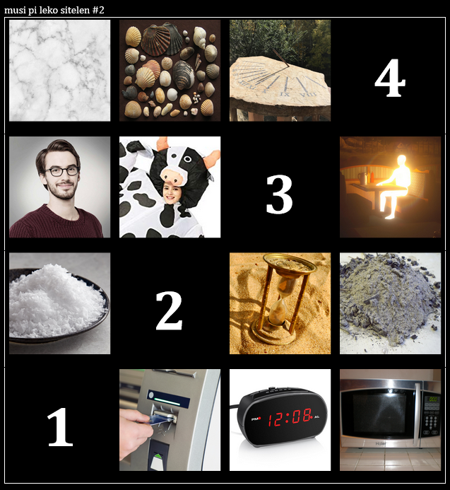
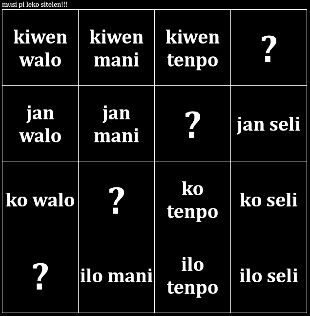
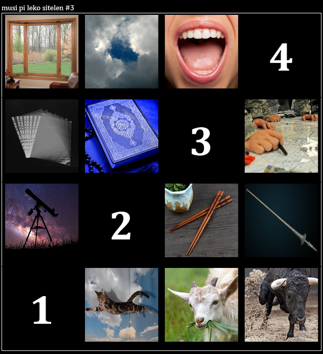
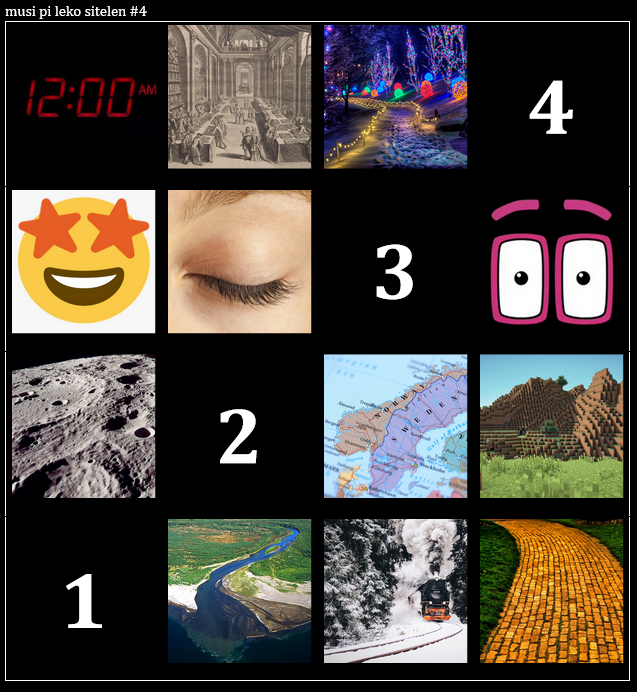
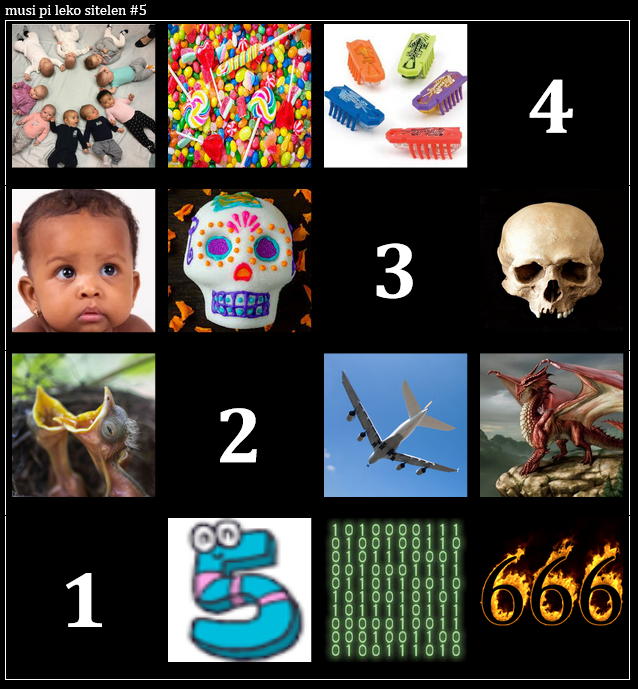
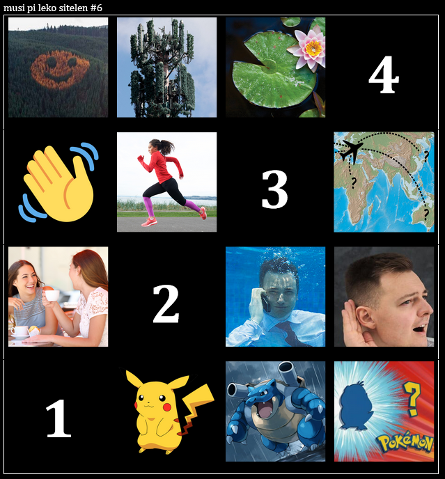

musi pi leko sitelen
musi pi leko sitelen li musi sin pi toki pona!
nasin musi li ni: leko luka luka luka wan li lon. leko luka luka tu li jo e sitelen lon insa ona. linja leko sewi la nimi wan li lon. linja leko poka la nimi wan li lon. ni la, leko ale li jo e nimi tu! nasin pona la, sina o kama sona e nimi tu lon leko pi sitelen ala.
wile mi la sina o pali e musi sina pi leko sitelen, la sina o pana e ona tawa mi la ona li kama lon lipu ni!

sona pona
(1) ilo walo, (2) ko mani, (3) jan tenpo (4) kiwen seli
sina wile sona wawa e nasin musi la sitelen leko ni li jo ala e sitelen li jo e nimi tu la o lukin:


sona pona
(1) soweli lukin, (2) palisa sewi, (3) lipu moku, (4) lupa utala

sona pona
(1) nasin mun, (2) ma pini, (3) oko lete, (4) tenpo leko

sona pona
(1) nanpa sin (anu nanpa lili), (2) waso suwi, (3) lawa ilo, (4) mute monsuta

sona pona
(1) monsuta pona (anu soweli pona), (2) toki wawa, (3) tawa telo, (4) kasi seme